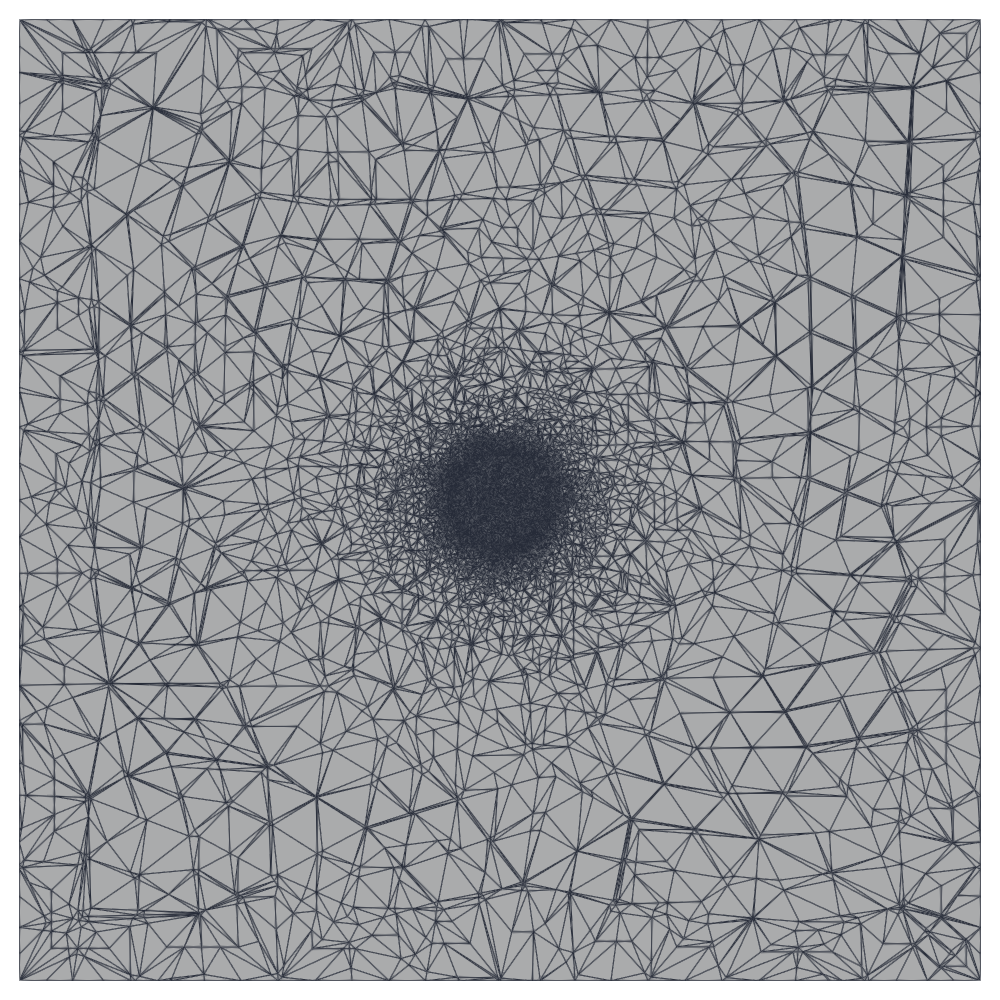
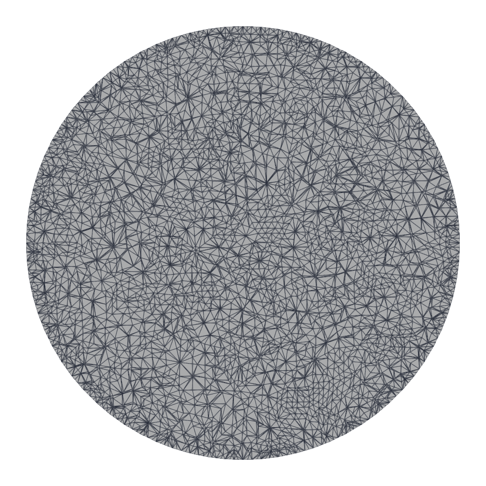
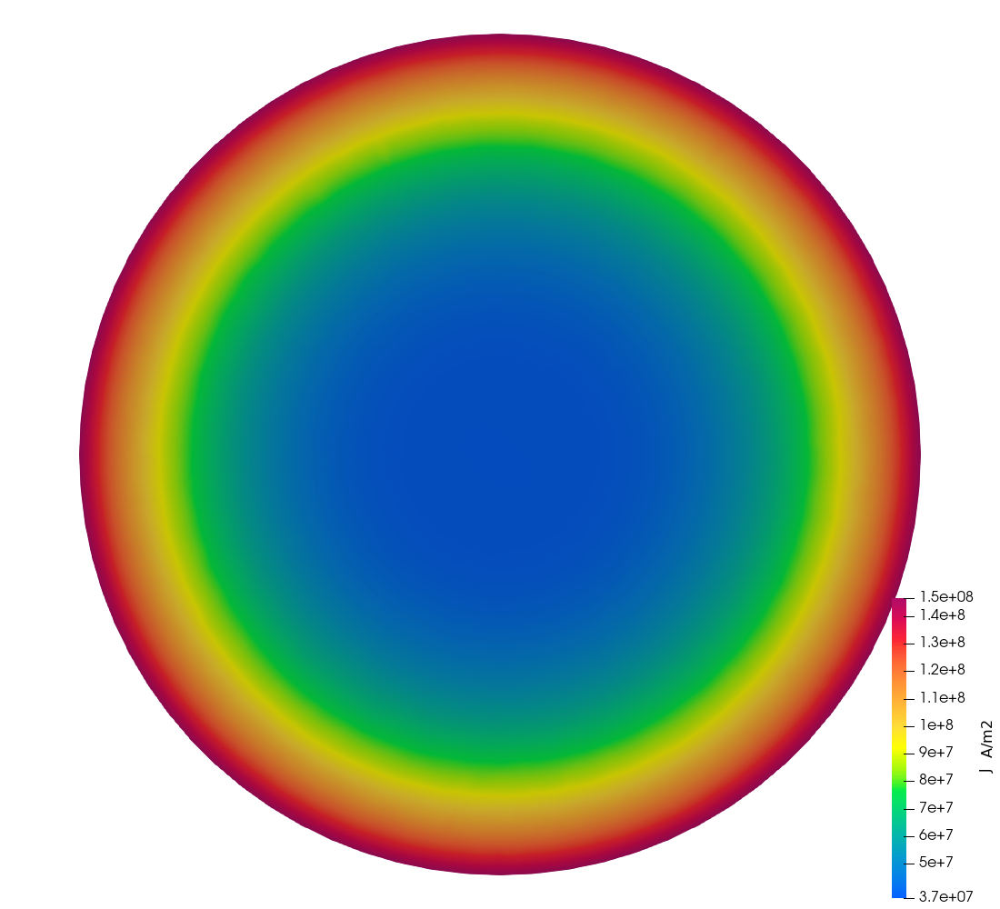
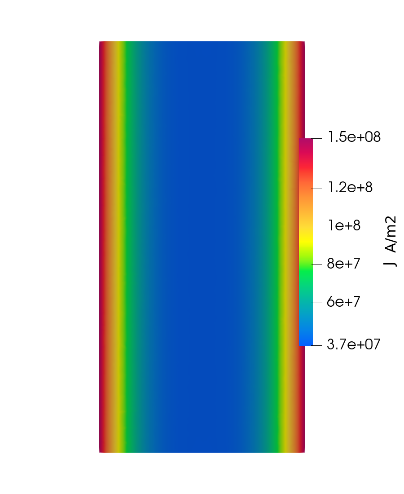
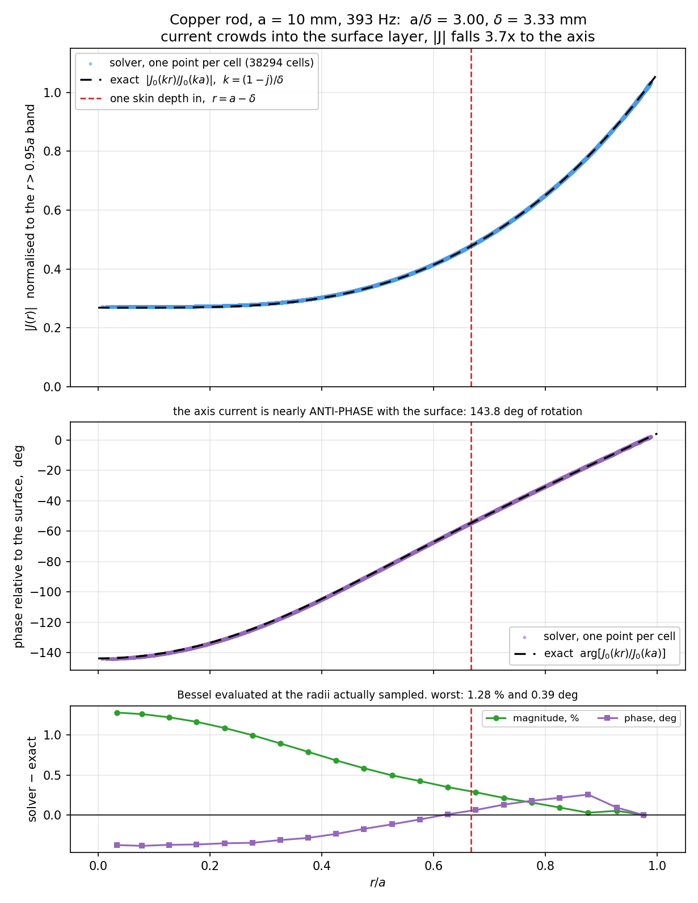
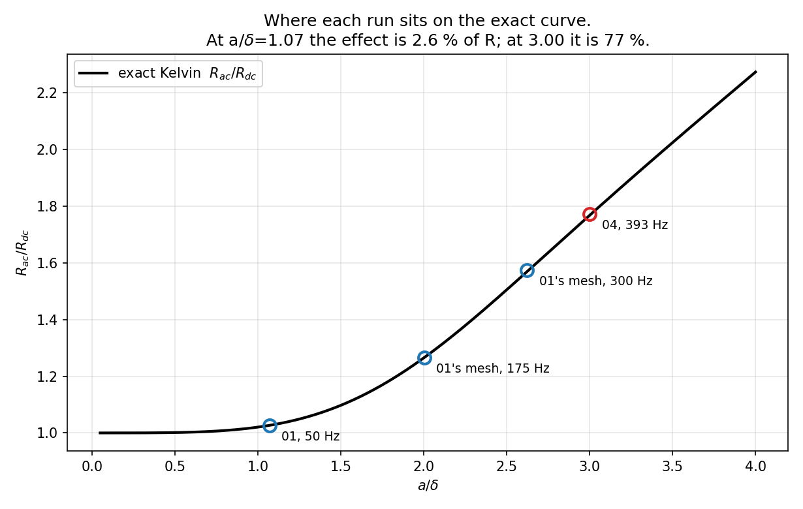
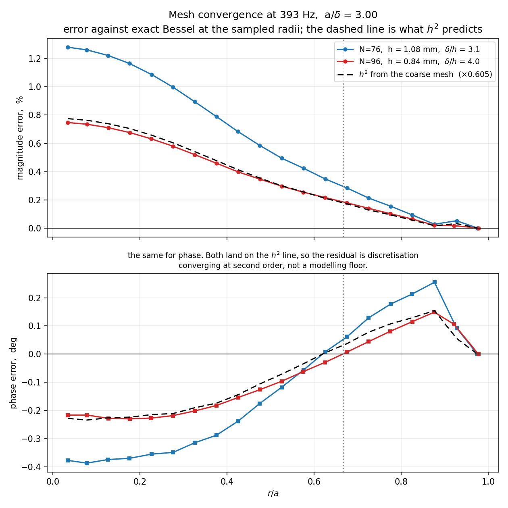

Hybrid A‑Φ finite-element solver, tree‑cotree gauge, validated against the exact Bessel solution for current density — magnitude and phase — and against Kelvin’s exact AC resistance.
01_OneCylinder runs the same rod at 50 Hz, where a/δ = 1.07 and
R_ac/R_dc = 1.027. The skin effect is real there but it is only 2.6 % of the
answer — almost all of R is just R_dc, which any solver that integrates
σ correctly will get right. Matching Kelvin to 0.038 % there validates
the effect itself to only about 1.4 %.
This case runs the same rod at 393 Hz, where the skin effect is 77 % of
R rather than a correction to it.
| 01 @ 50 Hz | 04 @ 393 Hz | |
|---|---|---|
a/δ | 1.070 | 3.000 |
|J(0)/J(a)| exact | 0.9265 | 0.2522 — 4x surface to axis |
| phase rotation, axis to surface | 27.6° | 148° — nearly anti-phase |
R_ac/R_dc exact | 1.0267 | 1.7680 |
| the skin effect is | 2.6 % of R | 77 % of R |
measured R_ac/R_dc | 1.02633 | 1.77191 |
| error against Kelvin | −0.038 % | +0.220 % |
| so the effect is validated to | ~1.4 % | ~0.29 % |
Why the larger raw error is the stronger result. 0.038 % looks better than
0.220 % until you ask what fraction of the answer the skin effect actually is. At
a/δ = 1.07 the quantity under test is a 2.6 % correction to a number the solver
would get right anyway. At a/δ = 3 it is most of the answer, and |J|
falling 4x from surface to axis is something a wrong answer cannot fake.
| Conductor | copper, σ = 5.8e7 S/m, a = 10 mm, L = 40 mm, a 76‑gon |
| Domain | 200 mm box of air, n × A = 0 on the outer boundary |
| Excitation | 1.0 V across the end caps, 393 Hz |
| Skin depth | δ = 3.3336 mm, so a/δ = 2.9998 |
| Formulation | first-order Whitney edge A, second-order P2 nodal Φ |
| Mesh | 31,922 nodes, 179,477 tets, 98,204 of them in the wire; Netgen-optimised |
A_poly | 313.8015 mm² (the circle would be 314.1593) |
R_dc | L/(σ A_poly) = 2.197743e‑06 Ω |
| Measured | |I| = 19977.92 A, Z = 3.894203e‑06 + 4.990355e‑05 j Ω |
Why 393 Hz and not more. At a/δ = 5 (1092 Hz) the exact
|J(0)/J(a)| is 0.054, so the core current is 5 % of the surface value and a relative
error there is being taken against nearly zero — the reference stops being well conditioned.
It would also need N = 128 and about 1.7 M unknowns. a/δ = 3 is the
most demanding point that still has a meaningful exact reference.
Inside the conductor displacement current is negligible (σ >> ωε),
so with the e^{jωt} convention:
Taking the curl of the first, substituting the second, and using ∇·B = 0
with constant μ:
Define the skin depth δ = √(2/ωμσ). Then
jωμσ = 2j/δ², and writing this as a Helmholtz equation
∇²J + k²J = 0 gives
For a long cylinder the current is axial and depends only on r, so the Laplacian
reduces to
which is Bessel’s equation of order zero. Its two solutions are J₀(kr)
and Y₀(kr); Y₀ diverges on the axis, so physics keeps only the first:
A notation collision worth naming. J_z is current density;
J₀ is the Bessel function. They are unrelated and both are standard.
This is not an exponential. e^{−(a−r)/δ} is only the
asymptotic form for a >> δ. At a/δ = 3 the Bessel solution is
what is correct, which is why the measured profile flattens toward the axis rather than
decaying to zero.
Because k is complex, J₀(kr) is a Bessel function of complex argument.
The Kelvin functions exist precisely to split that into real and imaginary parts:
Since kr = √2 (r/δ) e^{−jπ/4} and J₀ is even, this is
exactly J₀(kr) = ber(u) + j·bei(u) with
That is why u = √2 a/δ appears throughout: it is the same Bessel function
written in real arithmetic. The defining series are
At this case’s u:
| value at u = 4.242337 | |
|---|---|
ber(u) | −3.365444524 |
bei(u) | +2.095782021 |
ber′(u) | −3.475101853 |
bei′(u) | −1.160258139 |
Integrate the current density over the cross-section, using
∫₀^a J₀(kr) r dr = (a/k) J₁(ka):
Divide the surface field E_z(a) = J_z(a)/σ by that to get the internal impedance
per unit length, and normalise by R_dc = 1/(σπa²):
Taking the real part and rewriting in Kelvin functions gives the form used in
expected.txt:
and the companion internal inductance,
ωL_int/R_dc = (u/2)[ber·ber′ + bei·bei′]/[ber′²+bei′²],
which evaluates to 1.463933 here.
Every error quoted below is measured against these formulas, so a bug in them would be invisible and would corrupt every number in the report. Three independent checks:
Two routes to the same quantity. The Kelvin form above and
Re[(ka/2) J₀(ka)/J₁(ka)] are the same number written differently, computed here
through entirely separate code — real ber/bei series and derivative series versus
complex J₀ and J₁ series:
(u/2)(ber bei' - bei ber')/(ber'^2 + bei'^2) = 1.768019136
Re[ (ka/2) J0(ka)/J1(ka) ] = 1.768019136
difference = 0.0e+00They agree to machine precision at every a/δ from 0.1 to 5.
The Kelvin functions against their defining identity. The real
ber/bei series was checked against J₀(x e^{3jπ/4}) computed from the
complex series — a different code path — and they agree to machine precision at every
x tested up to 8, including this case’s 4.242.
Both asymptotic limits.
a/δ | computed | limit |
|---|---|---|
| 0.10 | 1.00000208 | 1 + (a/δ)⁴/48 = 1.00000208 |
| 0.50 | 1.00130073 | 1.00130208 |
| 10.0 | 5.25930 | a/(2δ) + 1/4 = 5.25000 |
| 30.0 | 15.25312 | 15.25000 |
That low-frequency limit also explains why cases 02 and 03 see nothing: at
a/δ = 0.16, (a/δ)⁴/48 = 1.4e‑05.
A caution the series carries. The alternating ber/bei series suffers
catastrophic cancellation at large argument — it returns nonsense by a/δ = 100.
It is exact to machine precision across the range used here (u ≤ 4.25), but it is not a
general-purpose implementation and should not be reused blindly at higher frequency.

lc_far = 16 mm at the wall over d_far = 45 mm. The dark disc in the
middle is the conductor and the shell of air around it, both held at the fine
size.
N = 76 the polygon is already visually a circle.The conductor is meshed at a uniform lc = 0.833 mm target, realising
h ≈ 1.08 mm as an equivalent regular-tet edge, against a skin depth of
3.334 mm. The air holds that same fine size for the first half skin depth outward and then
grades away. Everything below is why.
01_OneCylinder’s mesh was run at three frequencies first and the error read off
against Bessel, to find what resolution the profile actually needs:
| f | δ | a/δ | δ/h | worst band error | R vs Kelvin |
|---|---|---|---|---|---|
| 50 Hz | 9.346 mm | 1.070 | 5.66 | 0.26 % | −0.038 % |
| 175 Hz | 4.996 mm | 2.002 | 3.03 | 2.10 % | −0.050 % |
| 300 Hz | 3.815 mm | 2.621 | 2.31 | 4.73 % | +0.386 % |
So the error is governed by δ/h, and δ/h ≥ 3 is what holds it
near 1 %. At 393 Hz, δ = 3.334 mm, so h must be about
0.8–1.1 mm.
Reading the per-band error gets this backwards. At 300 Hz the error is
0.1 % in the annulus (r > 0.8a) and 4.7 % in the core
(r < 0.3a), which looks like “refine the core”. It is not.
|J| in the core is flat there — 0.3934, 0.3929, 0.3949 across
r/a 0 to 0.3 — so the core is not failing to resolve local variation. It is
inheriting accumulated error from the region where the field actually decays, and
δ/h was 1.45 to 2.31 across the whole conductor. The annulus’s own
relative error only looks small because |J| is large there.
At a/δ = 3 the decay region r > a − 2δ = 3.33 mm is
89 % of the cross-section, so there is nothing to gain by grading inside the conductor:
lc_core = lc_skin and the wire is meshed uniformly.
The polygon facet is 2a sin(π/N), and the design rule is that the volume element
size stays comparable to the facet width; a volume size well below the facet produces
slivers. At N = 36 the facet is 1.743 mm, so h = 0.833 mm would be less
than half of it. N = 76 gives 0.827 mm, matched to h.
This is the same rule that killed an N = 96 experiment in case 02 from the other
direction, where the facet was 0.098 mm and the volume size 0.25 mm. The ratio is what
matters, in either direction.
The mesh is graded by a Distance field measured from the conductor’s lateral
surface, mapped through a Threshold. That distance is unsigned, so it reads 10 mm
on the axis — the same as a point 10 mm out in the air — and the field coarsens
inward as well as outward. In 01_OneCylinder that left the core at 4.4 mm
elements with no cells at all inside r < 0.1a.
The fix, used here and in case 02, is a second field capping the interior:
Field[3] = MathEval; Field[3].F = Sprintf("%g", lc_core);
Field[4] = Restrict; Field[4].InField = 3; VolumesList = {wire_volume};
Field[5] = Min; Field[5].FieldsList = {2, 4};Restrict returns a huge size outside its volume, which is exactly what Min
wants, so lc_core binds only inside the wire and the air grading is untouched. A third
field holds the fine size through the first half skin depth outward (DistMin = δ/2
rather than 0) — without that, the fine size decays immediately and there is a fine
surface but no resolved shell.


z, which is what the infinite-cylinder assumption behind the analytical
solution requires.Unlike the 50 Hz cases, the auto colour range here is meaningful: |J|
spans nearly 4x across the section, so the visible structure is physics rather than noise in the
fifth digit.

J₀(kr)/J₀(ka)
evaluated at the radii actually sampled. Top: magnitude. Middle: phase. Bottom: both errors.
J_z(r) is sampled, and what is averagedThe scatter and the error curve are built differently, and the difference matters. The scatter is not averaged at all; the error curve and every per-band number in this report are. Each step, with real values from this run:
1. What one tetrahedron carries. The solver evaluates
E = −jωA − ∇Φ at each tet’s centroid and stores
J = σE there — one complex vector per tet
(src/postprocess.cpp:388). So every tetrahedron in the conductor holds exactly
one J_z number. Nothing is interpolated, and this is the per-cell field, not
the volume-averaged nodal one.
The figures above are nodal; every number below is per‑cell. They are not in conflict, and the difference is worth stating because an earlier version of this sentence overstated it. Point data is Gouraud‑shaded, so the colour ramps across each triangle instead of filling it flat — that is the only reason the cross‑sections read as smooth rings rather than a mosaic of tets.
For J the two agree: the nodal accumulation is guarded at material interfaces, so
J_node is exactly zero in the air and the profile survives — |J|/core
at 0.98–1.00a reads 3.91 nodal against 3.76 per cell. For
E it would not: averaging across the conductor surface is genuinely meaningless there, and the
band just outside the wire is E’s worst at −20.9 %
(FIELD_POSTPROCESSING.md §12). The analysis stays per‑cell because it is
averaged nowhere at all, which is the stronger reason.
2. “Mid cross-section” is a slab, not a plane. Of the 98,204 tets in the
conductor, 38,294 have their centroid in 0.3L to 0.7L — a band
16 mm tall, containing many layers of tets stacked along z, at every
azimuth. Dropping the outer 30 % at each end avoids the end caps; everything else is kept.
3. The scatter: one dot per tetrahedron, no averaging. Take a thin annulus,
r/a between 0.500 and 0.510. 304 tets fall in it:
| tet # | x mm | y mm | z mm | |J_z| A/m² |
|---|---|---|---|---|
| 461 | 4.4576 | 2.2736 | 22.5560 | 47,757,469 |
| 643 | −1.3930 | 4.8828 | 23.6917 | 48,309,852 |
| 682 | −5.0177 | −0.8934 | 12.5640 | 48,388,009 |
| 839 | 2.6615 | −4.2978 | 21.2980 | 48,020,578 |
| … | 296 more | |||
Different azimuths — the x, y run all around a circle of radius 5 mm —
and different heights, z from 12 to 24 mm. All 304 are plotted as 304 separate
dots, at essentially the same horizontal position r/a ≈ 0.505, each at its own
height on the vertical axis. That column spans:
That 1.86 % is the visible thickness of the blue band. It is genuine azimuthal variation plus element noise. Averaging would collapse it to a single dot and the reader would never know it was there, which is exactly why it is not averaged. A radial probe line would have been worse still: it would have permitted a lucky azimuth to be chosen, and would have sampled about 30 cells rather than 38,294.
4. The error curve and the tables: binned means. Bessel gives one value per radius and the mesh gives 304, so a comparison has to reduce them. Those bin by radius and average inside each bin:
r/a bin | tets | mean |J_z| | normalised |
|---|---|---|---|
| 0.00–0.05 | 85 | 37,363,065 | 0.2717 |
| 0.40–0.45 | 1318 | 42,933,836 | 0.3122 |
| 0.60–0.65 | 1832 | 60,312,699 | 0.4386 |
| 0.95–1.00 | 10033 | 137,525,167 | 1.0000 |
5. The reference is itself a mean. Everything is divided by the average over the
10,033 tets with r > 0.95a, which is why the curve sits at exactly 1.000 there
by construction. Both magnitude and phase use that same reference, so the drive’s amplitude and
its phase both cancel and only shape is compared. Amplitude is checked separately by
R, an integral of the same field. And the Bessel values in every comparison are
averaged over the same sampled radii, so the two sides are reduced identically — see the
note in §5 on why that reference moves when the mesh moves.
In one line. The scatter is 38,294 raw per-tet values with nothing done to them.
The curves and tables are those same values binned in r and averaged. The scatter shows
what the solver produced; the bins are what can be compared against a formula.
r/a | cells | |J| measured | |J| exact | err | phase err |
|---|---|---|---|---|---|
| 0.00–0.10 | 334 | 0.2717 | 0.2683 | +1.27 % | −0.385° |
| 0.10–0.20 | 958 | 0.2724 | 0.2692 | +1.19 % | −0.372° |
| 0.20–0.30 | 1576 | 0.2770 | 0.2741 | +1.04 % | −0.353° |
| 0.30–0.40 | 2248 | 0.2917 | 0.2893 | +0.84 % | −0.302° |
| 0.40–0.50 | 2842 | 0.3236 | 0.3216 | +0.63 % | −0.206° |
| 0.50–0.60 | 3323 | 0.3798 | 0.3781 | +0.46 % | −0.086° |
| 0.60–0.70 | 3900 | 0.4651 | 0.4636 | +0.31 % | +0.036° |
| 0.70–0.80 | 4413 | 0.5841 | 0.5831 | +0.18 % | +0.156° |
| 0.80–0.90 | 5212 | 0.7458 | 0.7454 | +0.05 % | +0.238° |
| 0.90–0.95 | 3455 | 0.8890 | 0.8886 | +0.05 % | +0.092° |
| 0.95–1.00 | 10033 | 1.0000 | 1.0000 | 0.00 % | 0.000° |
Worst band: 1.27 % in magnitude, 0.385° in phase, and both are monotonic —
largest at the axis, vanishing at the surface. That shape is the signature of an h-limited
solution rather than a wrong one: the error is largest exactly where δ/h is worst
and disappears where the mesh is finest.
J_z is a phasor and the magnitude comparison tests only half of it. The argument is
independent, and in practice more demanding: an error in the −jωA term of
E = −jωA − ∇Φ shows up in the phase before it shows up in
|J|. The exact rotation across the radius:
r/a | 0.0 | 0.2 | 0.4 | 0.6 | 0.8 | 1.0 |
|---|---|---|---|---|---|---|
|J₀(kr)/J₀(ka)| | 0.2522 | 0.2543 | 0.2833 | 0.3895 | 0.6119 | 1.0000 |
| phase, deg | −148.09 | −137.81 | −108.92 | −71.42 | −34.91 | 0.00 |
The axis current is nearly anti-phase with the surface. Across the whole suite:
| case | a/δ | measured lag | exact | error | (magnitude error) |
|---|---|---|---|---|---|
| 02 / 03 | 0.16 | −0.62816° | −0.63860° | 0.010° | 0.00 % |
| 01 | 1.07 | −27.4249° | −27.5592° | 0.134° | +0.26 % |
| 01’s mesh @ 300 Hz | 2.62 | −112.673° | −111.979° | 0.694° | +4.7 % |
| 04 | 3.00 | −134.239° | −133.847° | 0.392° | +1.15 % |
This case reproduces a 134° rotation to 0.39° — 0.29 % of the rotation, tighter than the 1.15 % on the magnitude ratio. Case 02 is the most telling of the others: its magnitude ratio is 0.99997, flat to five digits and nearly insensitive, yet it resolves a 0.64° lag to 0.010°.
Two details that had to be right. The complex field is averaged and the
argument taken afterwards; averaging the arguments is wrong wherever the phase spread inside a
band is not small, which is exactly the high-frequency case. And everything is referred to the same
r > 0.95a band, so the drive’s own phase cancels — Φ is gauge
dependent, but J = σE is not, so the result is physical rather than a convention.

a/δ = 1.07 the effect is 2.6 % of R; at 3.00 it is 77 %.| Kelvin exact | 1.768019 |
| measured | 1.771910 |
| error | +0.220 % |
| of which the polygon accounts for | +0.028 % — see §7 |
L from Im(Z)/ω | 20.2097 nH |
ωL/R | 12.8 — strongly inductive |
cylinder_skin_n96.geo is the same case at N = 96, lc = 0.640 mm,
which reaches δ/h = 4.0 in the conductor. It is not a regression case —
739,304 unknowns and 17.1 GB of factors is too heavy to run on every change — it exists to
establish the convergence rate.

h² predicts from the coarse mesh. The
fine mesh lands on it at every radius, in magnitude and phase alike.| N=76 | N=96 | ratio | implied order | |
|---|---|---|---|---|
h in the conductor | 1.08 mm | 0.84 mm | 0.778 | |
δ/h | 3.1 | 4.0 | ||
worst band |J| | 1.27 % | 0.74 % | 0.58 | 2.17 |
| worst band phase | 0.385° | 0.230° | 0.60 | 2.06 |
R vs Kelvin | +0.220 % | +0.145 % | 0.66 | 1.65 |
L | 20.2097 nH | 20.2041 nH | converged to 0.03 % | |
| unknowns | 418,318 | 739,304 | 1.77 | |
| factor nnz | 497.8 M | 1068.6 M | 2.15 | |
| factorization | 25.9 s | 81.8 s | 3.15 |
The rate matters more than either error value. A single number says
“we are 0.74 % off” and cannot distinguish discretisation error from a modelling
mistake sitting at a floor. Two meshes give the rate: h falls by 0.778 and the error
falls by 0.605 = 0.778², at every radius, in magnitude and phase alike. So the residual is
genuine discretisation converging at second order, and refinement would keep paying. An error
that had stalled between the two meshes would have meant the opposite, and would have pointed at the
geometry or the formulation rather than at h.
R converges more slowly (order 1.65) because part of its error does not scale with
h at all: the polygon floor, which fell 0.028 % to 0.018 % only because
N changed. Net of it, 0.192 % to 0.127 %.
| nodes / tets | 31,922 / 179,477 (98,204 in the wire) |
| unknowns | 418,318 — A: 176,554 free edges, 28,996 gauged, 8,772 Dirichlet |
| factor nnz | 497.8 M, about 8.0 GB |
| mesh | 24 s |
| factorization, MUMPS + threaded MKL | 25.9 s |
| one frequency end to end | 42 s |
| backward error | 5.5e‑21 |
This is the first case that cannot practically run on the internal solver, so its
expected.txt names the MUMPS input — the opposite of cases 01–03, which name
their plain inputs on purpose so check.bat exercises the default backend.
Measured scaling on this geometry, across case 01’s mesh and both meshes here:
fill ~ n^1.47, factorization time ~ n^2.39 on a sequential BLAS.
Linking MKL’s threaded layer (-DMKL_THREADING=intel_thread) is worth about
10x on this problem — 266.78 s to 25.94 s — because nearly all the flops are
dense kernels inside the frontal matrices, and a sequential BLAS runs those on one core. See
docs/MUMPS_SETUP.md.
The analytical solution is exact for an idealisation: an infinitely long, perfectly
circular conductor of uniform σ and μ, quasi-static. The simulation
differs from it in three ways, and the residual error is discretisation plus those
differences, not discretisation alone.
a/δ = 3 the current lives in
a thin surface layer, so what matters is the perimeter rather than the area: 62.8140 mm
against the circle’s 62.8319 mm, or −0.0285 %, which raises R_ac by
about +0.028 %. This will not go away with a finer mesh — only with a larger
N, which also changes R_dc. A tolerance tight enough to exclude it would be
asserting something false.0.3L to 0.7L, and the longitudinal slice shows no z dependence
there.n × A = 0 at 200 mm, against the
analytical solution’s unbounded exterior.Φ is gauge dominated here and is deliberately not checked. At
ωL/R = 12.8 the reactance dominates, and under the tree-cotree gauge
Φ differs from the z/L gradient by −jωψ,
which is the larger term; measured, Φ/V deviates from z/L by 0.51. That
was established by experiment rather than assumed: running 01_OneCylinder’s
same mesh at 1 Hz instead of 50 Hz — identical elements, only ω
changed — moves the deviation from 5.4e‑01 to 1.9e‑03, a factor of 253.
Discretisation cannot do that. E, B, H and J are
gauge independent and are what this case validates.
Memory, not time, is what stops further refinement on a 32 GB machine. Halving
h again needs N ~ 136 and about 1.8 M unknowns, which extrapolates to
roughly 45 GB of factors. Going materially below 0.5 % needs a different lever —
second-order elements for A, or an out-of-core solve — not a smaller h.
regression_tests/check.bat runs this case and asserts all five, against the values in
expected.txt:
|V| measured vs prescribed | 1.000000 vs 1.0 |
R/R_dc vs Kelvin | 1.77191 vs 1.768019, tol 0.006 |
L | 20.2097 nH, tol 0.05 — pinned to catch change |
<J>core/<J>surf | 0.281160 vs 0.277956, tol 0.005 |
| phase lag, core to surface | −134.239° vs −133.847°, tol 0.8° |
The two Φ checks are deliberately absent, and verify.py prints
SKIPPED with the reason rather than passing silently. An omitted key is a claim about the
physics, not an exemption.
gmsh cylinder_skin.geo -3 -o cylinder_skin.msh
..\run_case.bat cylinder_393hz_mumps.aphi
"C:\Program Files\ParaView 6.1.1\bin\pvbatch.exe" make_plots.py output
sh build_doc.sh # rebuilds this document
# the convergence study
gmsh cylinder_skin_n96.geo -3 -o cylinder_skin_n96.msh
..\run_case.bat cylinder_393hz_n96_mumps.aphi
"C:\Program Files\ParaView 6.1.1\bin\pvbatch.exe" make_convergence_plot.pyRun build_doc.sh after regenerating figures, or this document keeps showing the
previous run’s pictures — they are baked into the HTML and the PDF.